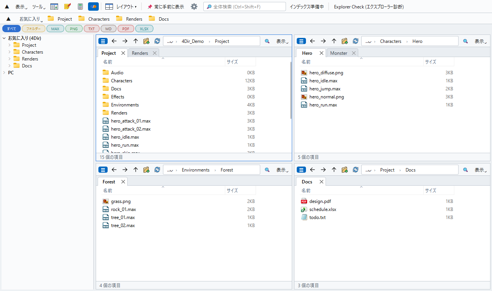
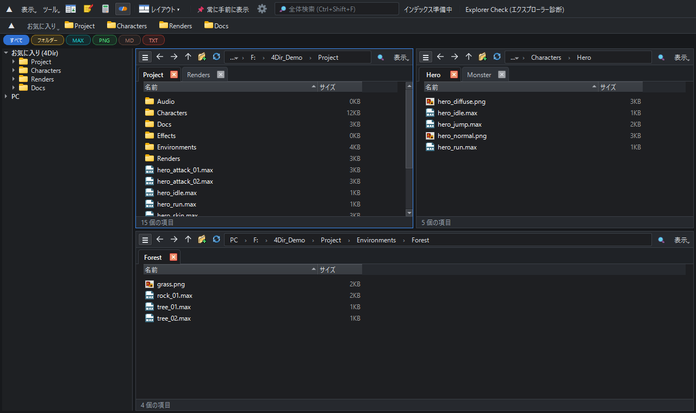

Windows エクスプローラーより速いマルチペイン ファイラー！！
Windows 10/11 用の無料ファイルマネージャー。インストール不要、展開してすぐ使えます。
Windows 10/11 64 ビット · 47 MB · 2026-11-06 · 無料
4Dir を支援する
4Dir は無料で広告もありません。時間の節約になったなら、少額の寄付が次のアップデートの力になります。
v0.9.108 の変更点
- 動画プレビュー：プレビュー ウィンドウで動画が再生され、GIF のように 1 コマずつ動かせます（|◀ ▶|、← →、スペースで再生/一時停止）。コマのバーとコマの帯、現在/全体の時間と fps、音（ミュート ボタン）、自動再生の切り替え。スマホ（Galaxy・iPhone・カメラ）が PC に表示され、開いてファイルをコピー・ドラッグ・貼り付け・名前の変更・削除できます。上部のボタンで全ペインの形式ボタン列を表示/非表示。
- 圧縮ファイルをフォルダーのように：ZIP・7Z・RAR・TAR をダブルクリックで 4Dir 内で閲覧（読み取り専用）、開く・コピー・ドラッグ・F6 で取り出し。コピー待ち行列：コピー・移動を 1 つずつ — ⏳ ボタンで待機中を取り消し・一時停止。展開表示：フォルダー以下の全ファイルを 1 つの一覧に（空き場所の右クリック・ツール）。重複ファイルを探す：名前が違っても内容が同じファイル — グループごとに 1 つ残してごみ箱へ。スペースでプレビュー ウィンドウを開閉。
- プレビュー ウィンドウ：メモ ウィンドウと同じく別ウィンドウで開くのでペインの大きさは変わりません。位置とサイズを覚え、常に手前に表示できます（右クリック）。GIF のコマ：|◀ 前・▶ 再生 / ⏸ 一時停止・■ 停止・▶| 次、コマの帯はドラッグで送れます。一覧上の形式ボタンは小さくなり形式ごとに色分け、文字が切れません — 入りきらない分は +N ▾ へ。メモの画像は決めたサイズのまま：画像をクリックして角のハンドルをドラッグで調整します。
- メモ ウィンドウ：📝 ボタン（または Alt+M、ツール ▸ メモ ウィンドウ）でメモを別ウィンドウで開きます。ペインのサイズは変わらず、タスク バーに表示され、常に手前にもできます。色付きメモにチェックボックス（行頭に '[] '）・箇条書き（'- '）・太字・斜体・下線・取り消し線・文字色・サイズ、チェックの進み具合（3/5）を表示。見出しをドラッグで並べ替え、ダブルクリックで折りたたみ、先頭に固定、文字や色で絞り込み。Web アドレスやフォルダー/ファイルのパスは Ctrl+クリックで開き、ファイルやフォルダーをドラッグするとリンク、画像の貼り付けも可能。フォルダーに付けたメモはそのフォルダーを開くと知らせ、リマインダーを設定するとその時刻にメモ ウィンドウが開きます。削除したメモはごみ箱から復元できます。メモは全ウィンドウ共通で自動保存されます。 表・番号付きリスト（'1. '）・配置・字間・フォント・「− サイズ +」・画像挿入ボタンもあり、リンクは青で表示されます。
- 画像と種類：一覧の上の種類ボタン（[すべて][フォルダー][JPG][PSD]…）でその種類だけ表示（Ctrl+クリックで複数）。詳細表示で種類ごとにグループ化（フォルダー・JPG・PNG…）。アイコン表示では画像サムネイルに種類ラベル（PSD・PNG・GIF…）、フォルダーには中の最初の画像を表紙として表示。プレビュー ウィンドウに GIF のフレーム操作（前/次のフレーム、スライダーとフレーム一覧、フレーム番号と間隔、今のフレームを PNG で保存）を追加し、Windows がプレビューを提供する文書・動画はそれを表示します。
- ツールヒント：すべてのボタンとメニューにマウスを置くと短い説明が出ます。設定 ▸ 全般 でオフにできます。

機能
最大 20 ペイン
1・2・3・4・6 ペインをワンクリックで、または最大 5 × 4 の自由なグリッドに。ペインごとに独立したタブ。
PC を重くしない
重い Windows シェルビューを使わず、フォルダーを直接読み込みます。待機中はタイマーもポーリングもなし。3ds Max やゲームなど重いアプリの横で開いたままでも安心です。
すぐに見つかる検索
入力するだけで全ドライブのファイル名を検索。独自インデックスがリアルタイムで更新され、管理者権限は不要です。
SVN の状態がひと目で
.svn を直接読んで変更・追加・競合のバッジを表示。中身が変わったフォルダーは赤に。Git・Perforce は Windows のオーバーレイで表示。
エクスプローラーと同じ操作感
同じショートカットキー、Windows の右クリックメニューそのまま、エクスプローラーや他のアプリとのドラッグ＆ドロップ。.webp 画像は右クリックで PNG・JPG に保存。
ポータブルでプライバシーも安心
設定は 4Dir フォルダー内だけに保存。ライト/ダーク、10 言語、一括リネーム、セッション復元、エクスプローラー診断を搭載。

インストール方法
- 上のボタン（または GitHub の Releases）から zip をダウンロードします。GitHub の緑の「Code → Download ZIP」はソースコードのみで、そのままでは動きません。
- zip を右クリック → プロパティ → 許可するにチェック → OK。（しないと毎回セキュリティ警告が表示されます）
- 好きな場所に展開して 4Dir.exe をダブルクリック。（止められた場合は 4Dir.vbs）
Windows SmartScreen が表示されたら 詳細情報 → 実行 をクリック。
ダウンロードの確認（任意）
コマンドプロンプトで certutil -hashfile 4Dir_v0.9.108.zip SHA256 を実行し、結果が次と一致すれば正規ファイルです：
e5fe1394569211793f93f935860c93bbd52ddf631d4b168d8fb48f3439c0c8eb
よくある質問
本当に無料？
はい。4Dir は無料のオープンソース（GPL-3.0）です。広告・アカウント登録・試用期間はありません。
会社で使ってもいいですか？
はい。4Dir は GPL-3.0 のフリーソフトなので、会社でも費用・登録なしで使えます。インストール不要のソフトなので、会社のセキュリティ規定でポータブルソフトが許可されているかだけ確認してください。
本当にエクスプローラーより速いの？
ファイル 1,000 個のフォルダーを新しいウィンドウで開くと、4Dir は 0.4 秒、エクスプローラーは約 2 秒でした。ウィンドウを 1 つ増やしたときのメモリ増加は 4Dir 約 10 MB、エクスプローラー約 130 MB。同じ PC（Windows 11・SSD）で各 5 回測った値です。1 つのフォルダーに数万ファイルあると差は小さくなります。
データを送信する？
個人情報は送信しません。1 日 1 回、新しいバージョンがあるかを確認するだけです（ツールメニューでオフにできます）。
問題が起きたら？
ツール → 問題報告用ログを保存 → 通知の「メールで送る」を押すか、zip を support@4dir.net に送ってください。GitHub の Issue でも受け付けます。